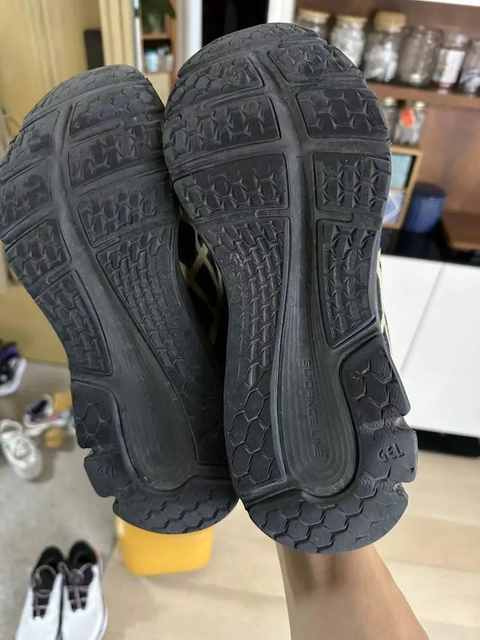
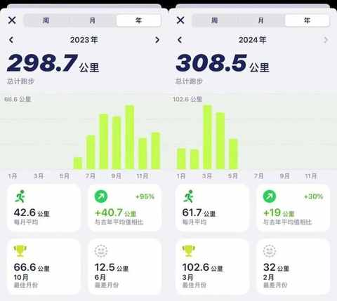
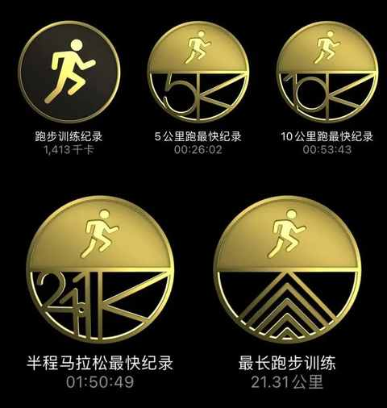
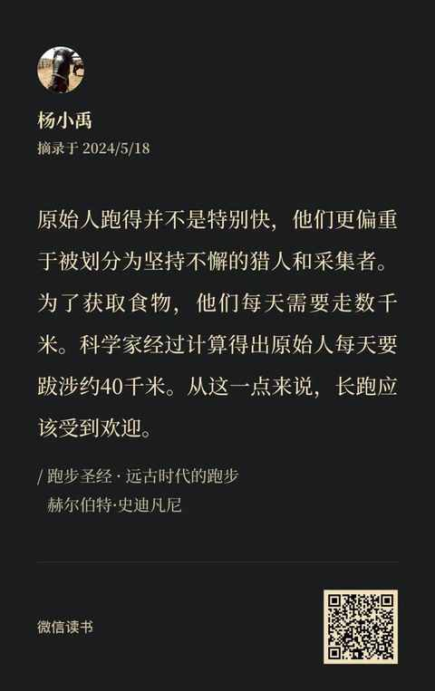
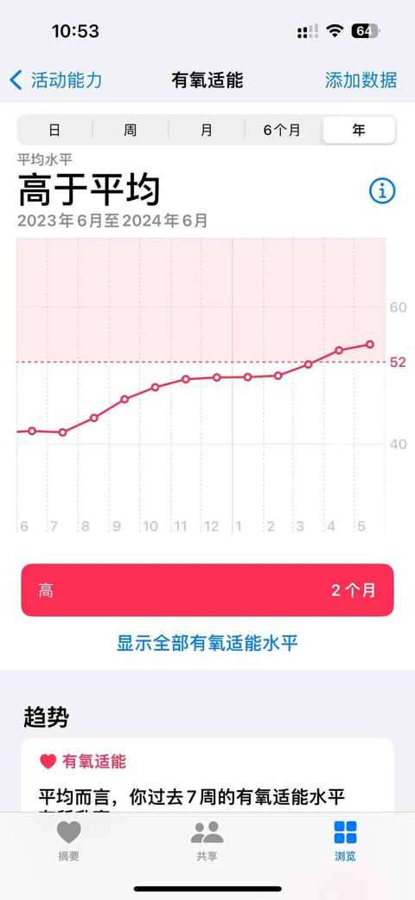
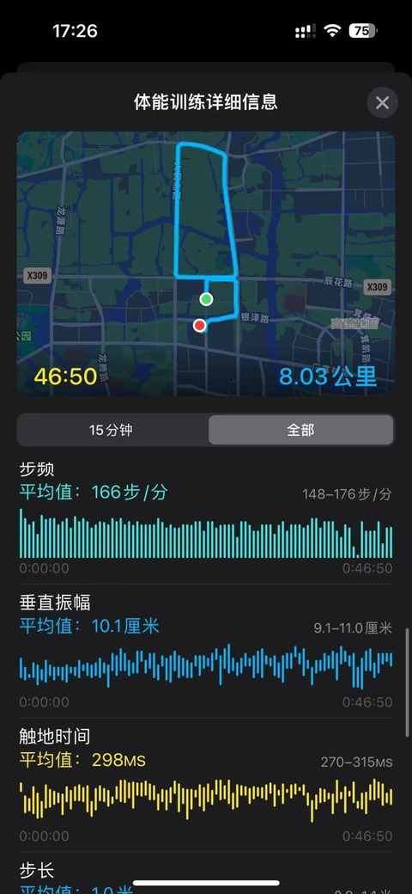

跑步新手，一年600 km跑量的感受分享
一、为什么跑步？
关键因素： 老婆在交个朋友直播间买了一双跑步鞋


本着物尽其用的原则， 从去年 6 月份正式开始跑步的，主要原因也是因为 4 月份眼眶骨折的手术之后，不可以进行打篮球之类的剧烈运动，在复查的时候有询问医生是否可以跑步，也是得到了肯定的回复，和中年危机无关，是权衡之下的被动选择。

不知不觉的中居然跑了接近一年，从刚开始的 3km 到 5km，再到8km、10km、15km，甚至 3 月份的最后一天还完成了一次半马的练习。

如果早一点开始跑就更好了，跑步是一项贴近人本能的运动，也有着比较高的燃脂效率，适合大部分人，也有科学家考据过，原始人每天需要跋涉大约 40km，那换算成微信步数，得接近或者超过 4w 步，如果你每天走 1w 步，那原始人的步数是你的四倍有余。

二、坚持跑步带来哪些变化？
1. 体能变好

*有氧适能，也称为心肺适能，是指人体摄取、运输和利用氧的能力，它是实现有氧工作的基础。有氧适能水平越高，有氧工作能力越强。有氧适能可以通过最大摄氧量、乳酸阈等指标进行判断，并无明确正常值，但可以通过体育锻炼、健身活动等提高。
2. 维持体型（体重）
单纯的运动并不能减肥，前置条件必须是控制好食物的摄入，而且要做到营养均衡，要不然很容易体重轻了，但体脂变高，体能变差，状态也不好
3. 唤醒本能
天气不错，出去跑跑
心情不错 / 不好，出去跑跑
好几天没跑了，出去跑跑
新买的鞋子、袜子到了，出去跑跑试试看怎么样
今天挺冷的，出去跑跑
今天挺热，上上强度，出去跑跑
外面下雨了，好像也能跑，出去跑跑
……
总之，你会有一万个跑步的理由。
三 、有哪些 tips ？
1. 袜子很重要
可优先选择李宁或迪卡侬的跑步袜，踩坑的可能性小
2. 不求快但求稳
能最大程度上减少损伤的风险
3. 前期不纠结姿势
跑步是本能，每个人的发力方式都不太一样，以自己最舒服的方式去跑
4. 量力而行，循序渐进
跑 100m 也是跑，1km 也行，走一段跑一段也行
5. 高效选跑步鞋
关注一些球鞋博主和运动博主，看看他们共同推荐的鞋子有哪些，然后根据需求去买就行，也可以直接去线下店试穿。
6. 可穿戴设备
最好有能实时监测心率的手环手表之类的设备
7. 跑前热身和跑后拉伸很重要
肌肉需要精细点保养
四 、有哪些依然没变 ？
1.依然跑不快
跑量的积累十分重要，继续在累积中，目前只能 1-2km 维持 5 分配，5km 还是跑不进 25 分钟。
2. 跑姿不规范
左右脚发力不均衡且有点外八
3. 步频不到 180
其实是 170 都没到，仍然需继续练习
